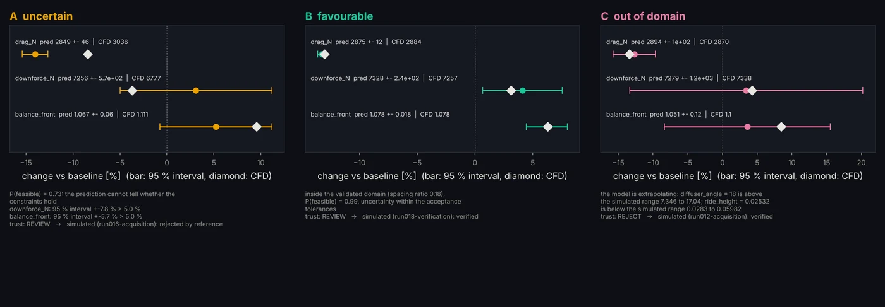
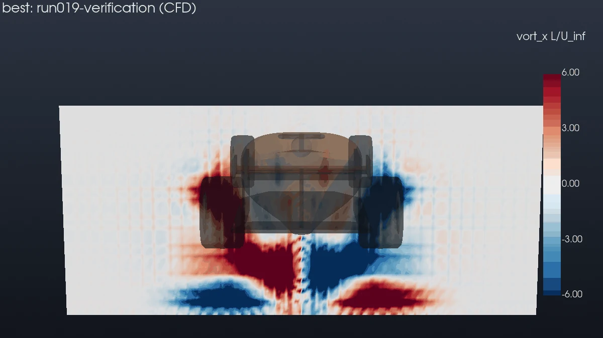

Otimizar com CFD é fácil de descrever e caro de fazer: cada avaliação custa horas de solver. O problema deixa de ser o algoritmo e passa a ser a pergunta que quase ninguém gasta tempo respondendo: qual é o próximo caso que vale simular?
O que a plataforma fez sozinha
O caso é um carro de corrida paramétrico, com asas, altura de solo e ângulo de difusor, a 70 m/s. A missão recebeu três objetivos ao mesmo tempo: baixar o arrasto, manter o downforce acima de 7 kN e manter o balanço aerodinâmico dianteiro dentro da faixa. O orçamento: 20 rodadas de OpenFOAM 3D.
A cada rodada o substituto é retreinado, o NSGA-II propõe os candidatos, e cada candidato recebe um veredito antes de gastar solver: favorável, incerto ou fora de domínio. Só o que vale a pena vira caso novo, e o critério é a própria incerteza do modelo.

O número
−15,7% de arrasto contra o baseline, com o downforce acima do piso de 7 kN e o balanço dentro da faixa, em 20 rodadas que somaram 3,3 horas de solver (quatro núcleos) e nenhuma falha.
O mesmo desenho, rodado na malha fina, dá −13,9%. É esse o número honesto: a malha usada na campanha subestima o downforce em 8,4% e, com ele, exagera um pouco o ganho.

Por que isso importa mais que o número
Um ganho de 15,7% depende de quantas simulações você pode pagar, e o custo aqui está medido: 20 avaliações, três horas e meia, cada uma escolhida por uma razão registrada. Um engenheiro com o mesmo orçamento chegaria longe; a diferença é que aqui o relatório diz onde o substituto estava extrapolando e por que aquela rodada foi comprada.
